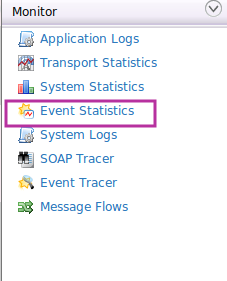
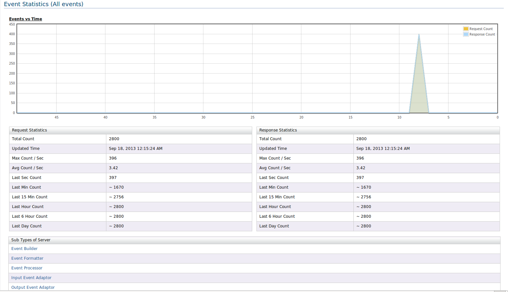
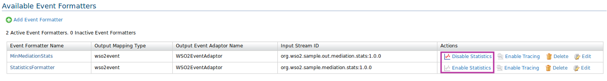

CEP Event statistics is an important feature that helps for monitoring purposes of events. This gives real time request and responses vs time for all the Topics incoming and outgoing CEP. You can use this visualization to get an idea about system throughput, input frequency and check whether the inputs are received or outputs are published. By default event statistics id disabled in CEP to avoid over-head of unnecessary processing of events.
To enable the event statistics in CEP, user needs to enable the tracing in carbon.xml of the CEP server. (<CARBON_HOME>/repository/conf/carbon.xml).
Change the property <StatisticsReporterDisabled>true</StatisticsReporterDisabled> to false to enable event statistics. Event though event statistics is enabled in CEP, It is not activated by itself. User needs to activate event statistics for each and every configuration that they want since monitoring event statistics takes considerable amount of processing overhead.

As shown above, you can simply enable or disable event statistics for event formatter configuration. You can follow the sample approach for Output Event Adaptor, Event Builder, Event Processor and Input Event Adaptor as well, But consider any change in event statistics status (enable or disable) will lead to redeployment of necessary configuration.
Follow the instructions below to access the Event Tracer.